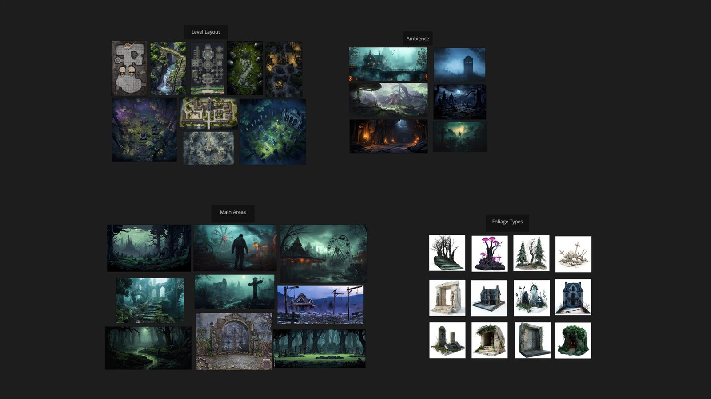

Breakdown
CoreUndead
CoreUndead is a fantasy action-RPG shooter and my first complete game in UEFN (Unreal Editor for Fortnite). Over a five-week personal project, I set out to build a level players would remember: one that unveils new abilities as you progress and pulls you into its story.
- Developed in 5 weeks
- UEFN
- Action RPG
- Third person
- Linear
- Shooter
- Platformer
Pre-production
References
I gathered references for landmarks, environments, rooms and traps, as both reference material and inspiration. I compiled everything in PureRef into a one-page board that became the foundation for the level.

Story
The Core has attacked, and it's up to us to stop it.
Points of interest
- House - Starting Area
- Passageway - Entry Area
- The Gardens
- The Labyrinth
- The Swamp
- The House
Production
Understanding metrics
To nail the metrics, I built a gym out of default Unreal shapes and scattered markers around it, using the Unreal mannequin for scale. Once the metrics felt right, I blocked out a rough 3D mock-up of the whole level, start to finish.
Combat spaces
The game is a shoot-fest, but it rewards players who use traps as well as guns. Some combat spaces are built to trap the player and make them fight their way out, and multiple weapon types encourage players to vary their playstyle.
Hidden areas & vantage points
The map is full of hidden areas and vantage points that can only be reached by dodging traps and a bit of platforming. Each one rewards the player with a power-up.
Feedback session
Once the first alpha was complete, I sent the level out for playtesting and collected notes on platforming feel, narrative and combat.
Level flow
Layout overview

The layout is linear, with secret areas that open up when the player destroys barriers. Each point of interest has exploration beats that reward the player with loot or story moments that expand on their adventure, and each one ends in a boss fight.
Intensity chart

Combat pacing

Closing thoughts
CoreUndead was my first UEFN project. I started it as a Blocktober showcase and kept developing it over five weeks. It taught me the editor inside out, from custom materials to the full range of Fortnite's creative devices. With more time, I'd develop the dialogue and overall narrative further.